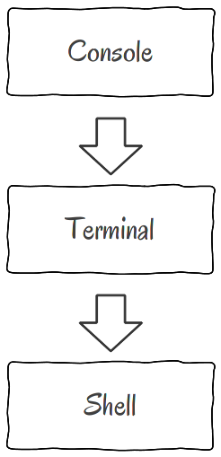
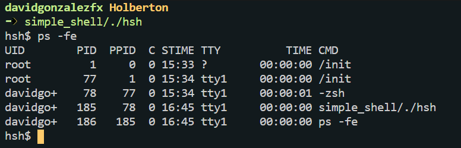

What happens when you type ls -l in the shell
Previously I wrote about what happens when you type ls *.c in you shell. The last weeks with my team, we worked on project about create our own shell.
So based on the knowledge we acquire doing our simple_shell today I want to talk you deeply about what happens when you type some instruction to your shell.
Table of contents:
- Difference between shell and terminal
- What is the Kernel and how system calls works
- Child and parent processes
- PATH and commands
- How shell execute
ls -l
If you want to execute commands on your shell, you should first open your terminal. So, first of all, I want you to have clear the main difference between shell and terminal.
Shell vs Terminal
I will give you a conscious explanation about this difference, of course we could go deep in this topic but for today purpose I will cover the main differences. First, shell is a program that runs inside a terminal. So, terminal is an user interface where we can execute a shell. The terminal basically is a text input/output environment, but terminal by itself can interpret what users type in keyboard. There is where a shell (also called command line interpreter) comes. A shell is a program able to read user input, interpret this and according to the commands and flash, show the respective output. The workflow is something like this.
The first version of shell was
Now, both programs shell and terminal have some communication with the Kernel.
But what is the kernel and syscalls?
The kernel is a low level software responsible of communication (in safe mode) between hardware and resources with all the programs that user wants to execute. The kernel also control the external devices, so is the kernel who allows for example, that some text editor, print (in printer) some documents.
But the way the kernel works is with system calls. A system call is similar to functions calls, the main difference is that syscalls are subroutines built inside the system while a function is a subroutine built within a specific program. There are syscalls for handle all communication with the hardware, such a open/opendir that allows us to open files/directories, write for example allow us to print different kind of messages and getline is the syscall that we use for code our own shell, because it helps us to get the user input in terminal.
Child and parent processes
Its important for you know that everything in operating systems are handled with processes. So, when you turn on your computer, the first process (init) starts. Each time you run something, it create a new processes. For example, when you run your shell (inside terminal), the shell runs in new process which parent process will be the process where terminal runs. Here you can see:
The PID is the id for current process and PPID is the id of its parent process. Look at the image that the first process is init and have the PID 1. Here I run our simple_shell project inside my terminal (zsh), and we can see how processes are working. The simple_shell process with 185 PID was created by 78 process with actually is zsh process.
Know how to handle process is important and allows you to run different tasks without problems. The system call you use for create child processes is fork() and if you want that parent process stop its execution until child ends you should use wait() syscall.
We’re almost done to understand what happens when you type ls -l in the shell. But before, quickly I will explain you what are $PATH and why this is important to handle commands.
$PATH and commands
In a nutshell, PATH is a environment variable that contains directories separated by : with executable files where CLI (command line interpreters or shell) will search before execute commands. But what are commands? It is easy, a command is just an instruction given by the user to shell through the terminal. Interesting thing here is that the commands can be follow by flags. Flags works form commands just as arguments works for functions in programming. The flags tells the command more details about how to execute a task. This will look like this:
Finally let’s see how everything works the shell, when you type ls -l
How shell execute ls -l
Now that you already understand (I hope) what is the terminal, what is the shell, how both communicate with kernel and syscalls, child and parent processes and PATH variable, I can teach you the shell flow for execute command ls with flag -l. First a user opens the terminal and execute a shell program. Then user type ls -l and when user type enter, the shell output this:
Between user input and shell output, the shell does this task:
- show the PS1 prompt. PS1 is a variable with the default shell prompt $
- wait for user input
- read user input with getline system call ls -l
- tokenize the user input to identify command and flags. At the beginning ls -l is just one string. When shell tokenize our command is ls and the flag-l . Here -l flag means long format
- search how to execute command: The shell will first search if the command that user inputs, is an Alias (like shortcut for commands), if is not an Alias search for built-ins (command built inside the shell program), if is not then will search if the command is a executable file inside all $PATH dirs (here is lscommand) if not found shell will throw a “not found” error. But if the command starts with dot or slash, the shell will execute it without any search.
- To execute, shell validates that command or file, exists and user can execute permissions (with stat() and access() syscalls). If this happens, the shell will creates a child process (with fork() and wait syscalls) and here ls -l is executed (here you can use execute() syscall. It must be executed in child process because when execution ends, the process ends to. But we want to keep our shell with its prompt running. That’s why every command executed, runs inside a child process. So here we got the output showed in the image above.
- Finally, after execution the
PS1prompt variable is showed again and shell once again waits for user input. An this loop runs until user typeexitorCTRL + Dto end shell process.